原文出处:本文由博客园博主霸道流氓提供。
原文连接:https://www.cnblogs.com/badaoliumangqizhi/p/11528305.html
原文连接:https://www.cnblogs.com/badaoliumangqizhi/p/11528305.html
场景
FastReport .NET 2019是一款适用于Windows Forms, ASP.NET和MVC框架的功能齐全的报表分析解决方案。可用在Microsoft Visual Studio 2005到2015，支持.Net Framework 2.0到4.x，.Net Core 2.0。同时FastReport .NET还能创建独立于应用程序的报表
安装资源下载
关注公众号：
霸道的程序猿
回复：FastReport
实现
安装
双击FRNetDemo.msi文件进行安装
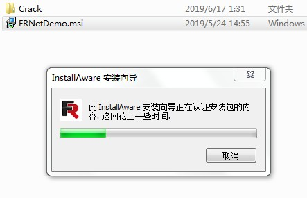
然后点击Next
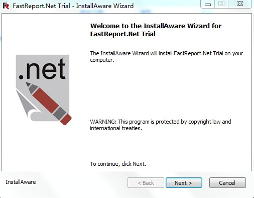
勾选接受协议
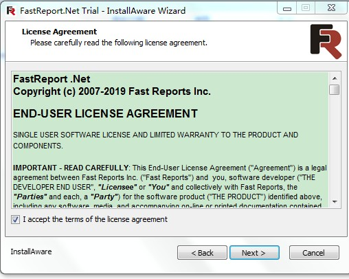
然后会让你选择要安装的内容是完整版还是低配版还是自定义版，这里选择第一个完整版。
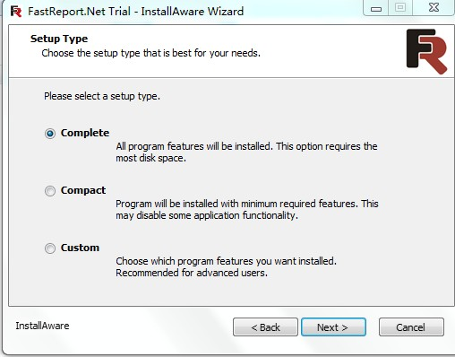
点击next，选择安装目录
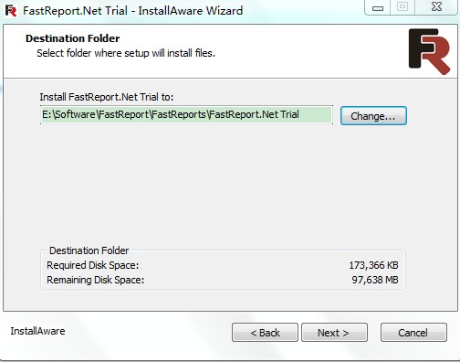
然后选择该软件的使用权限，选择只为我。
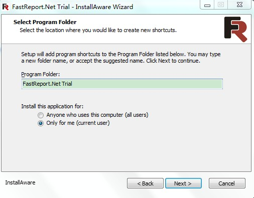
点击next则开始安装
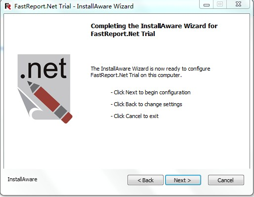
点击next,安装完成后，不勾选启动。
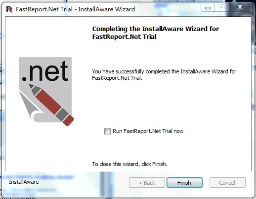
去除限制
找到Crack目录下的FastReport.dll，将其复制，然后找到
C:\Windows\Microsoft.NET\assembly\GAC_MSIL\FastReport\v4.0_2019.3.5.0__db7e5ce63278458c
此目录下将其替换。
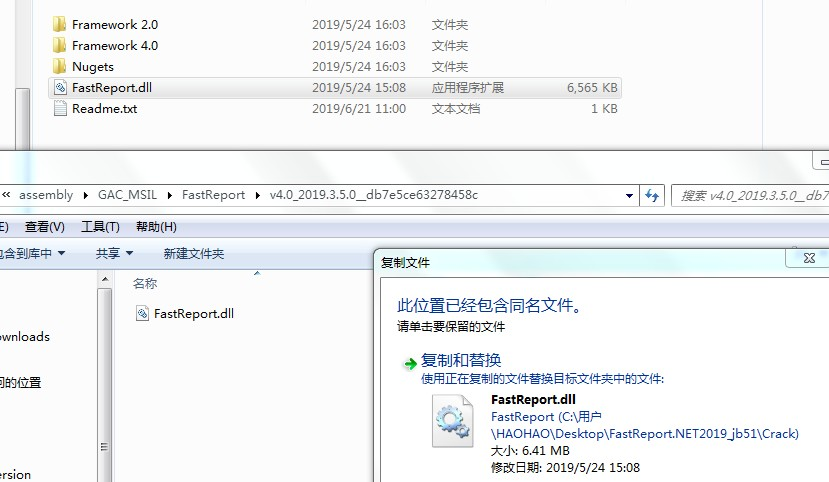
添加到工具箱
打开VS,新建Winform程序，打开工具箱，右击工具箱，选择添加选项卡
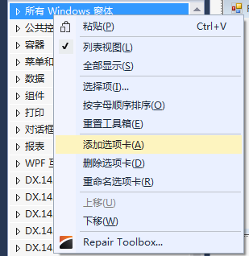
然后右击选项卡，选择项
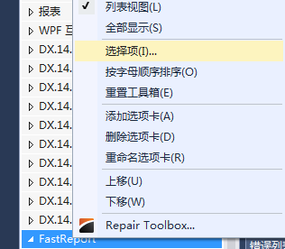
点击浏览将刚才安装目录下的dll文件选中
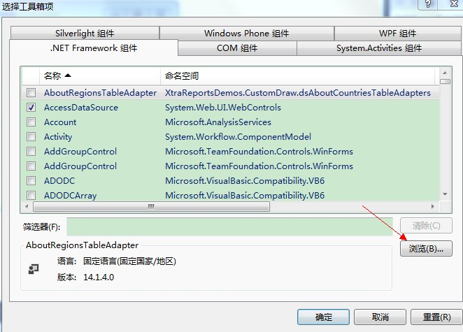
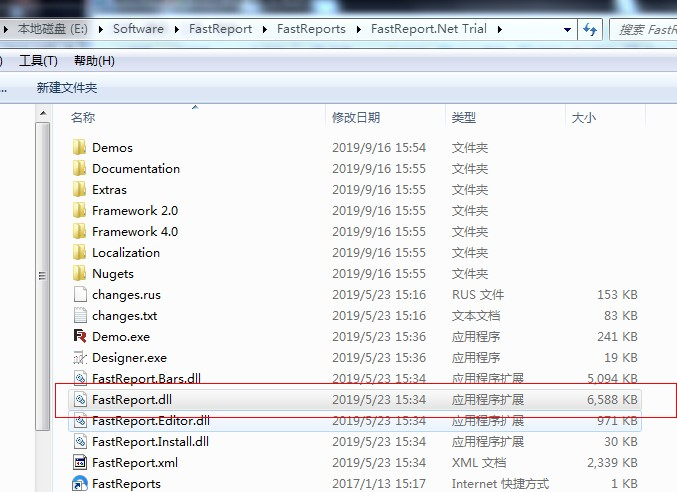
然后就会看到已经有FastReport的控件了。
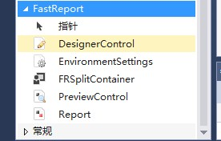
在窗体中拖拽一个DesignerControl，已经可以使用
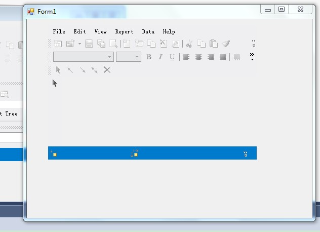